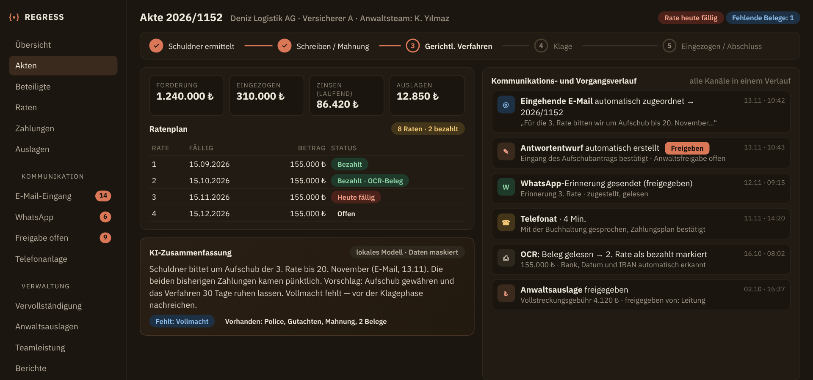
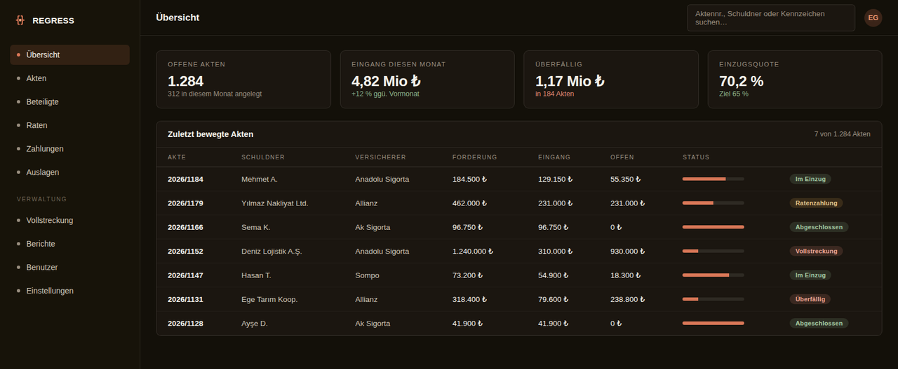
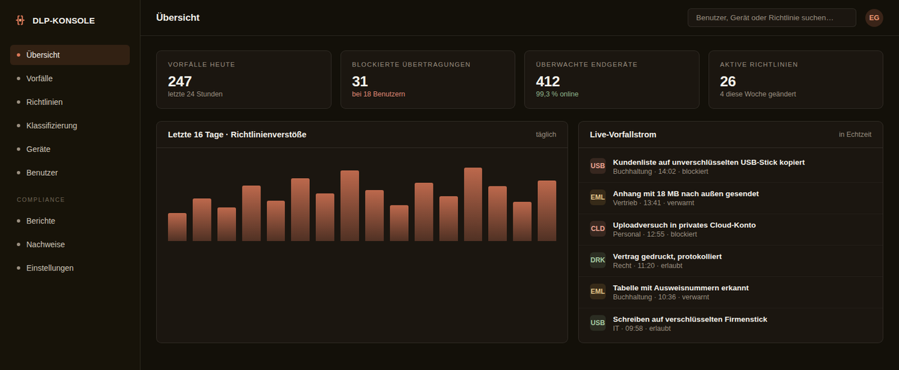
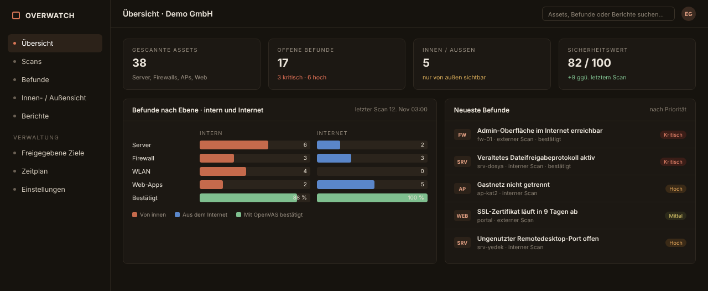

Regressverwaltung
Das gelöste Problem
Regressakten lagen verteilt in zwei über Jahre gewachsenen Altsystemen (MySQL und MSSQL) und in Excel-Tabellen. Akten von 42 Versicherern, Anwaltsauslagen, Schriftverkehr mit Schuldnern und Zahlungseingänge wurden an getrennten Stellen geführt; eingehende E-Mails und Nachrichten wurden von Hand gelesen und eingetragen. In welcher Phase eine Akte stand, welcher Beleg fehlte und was in diesem Monat eingegangen war, musste jedes Mal manuell zusammengestellt werden.
Eine Unternehmensplattform, die Regressakten im Auftrag von Versicherern durchgängig verwaltet — von der Anlage über das gerichtliche Mahn- und Klageverfahren bis zu Einzug und Abschluss. Über 360.000 Datensätze aus zwei Altsystemen wurden ohne Verlust in eine moderne Anwendung übernommen; während der Umstellung liefen beide Systeme synchron. Eingehende E-Mails werden automatisch gelesen und der richtigen Akte zugeordnet, Routinekorrespondenz wird automatisch erstellt und versendet; mit WhatsApp Business und Telefonanlagen-Anbindung ist der Schuldner einen Klick entfernt. Lokale KI und OCR lesen und klassifizieren Belege; ausgehende Daten werden maskiert, und jede Nachricht an einen Schuldner geht erst nach Freigabe durch einen Mitarbeiter hinaus. Das Anwaltsteam und das externe Anwaltsnetz arbeiten im selben System, das auf eigenen Servern mit Festplattenverschlüsselung und rollenbasierten Rechten läuft.


Eingesetzte Technik
Kernfunktionen
- Akten und 360.000+ Datensätze von 42 Versicherern auf einer Plattform
- Verlustfreie Übernahme aus zwei Altdatenbanken (MySQL + MSSQL), während der Umstellung synchronisiert
- Verpflichtender Ablauf Schritt für Schritt: Schuldner → Schreiben → gerichtliches Verfahren → Klage
- Eingehende E-Mails werden automatisch gelesen und der richtigen Akte zugeordnet
- Automatischer E-Mail-Versand: Mitteilungen, Erinnerungen und Antworten
- WhatsApp-Business-Anbindung; Verlauf in der Akte, jede Nachricht von Menschen freigegeben
- Anruf per Klick (Telefonanlage/SIP) und Leistungsübersichten fürs Team
- Belegerfassung und Nachverfolgung fehlender Unterlagen mit OCR und lokaler KI
- Raten-, Zahlungs-, Auslagen- und Zinsberechnung; Sammelzahlungen und Sammel-Statuswechsel
- Freigabeprozess für Anwaltsauslagen und Verwaltung des externen Anwaltsnetzes
- Automatische Warnung bei überfälligen Akten, Einzugsquote in Echtzeit
- Eigene Server, Festplattenverschlüsselung, Rollenrechte, DSGVO-konforme Datenmaskierung
DDS Platin — Data Loss Prevention (DLP)
Das gelöste Problem
Niemand wusste, wohin Unternehmensdaten gingen. Kopierte ein Mitarbeiter eine Kundenliste auf einen USB-Stick, schickte sie an seine private Adresse oder lud sie in einen Cloud-Ordner, fiel das niemandem auf. Fertige DLP-Produkte waren mit Lizenzen pro Benutzer teuer und passten nicht zu den eigenen Regeln des Hauses — und bei einer Datenschutzprüfung müssen diese Vorgänge belegt werden.
Keine Installation eines fremden Produkts, sondern ein dreischichtiges Datensicherheitssystem, das wir von Grund auf geschrieben haben. Der Windows-Agent auf jedem Rechner protokolliert Anwendungs- und Fensteraktivität und blockiert oder meldet Datenabflüsse über USB, E-Mail und Cloud gemäß Richtlinie. Die Protokolle laufen auf dem zentralen Server zusammen; die Web- und Desktop-Konsole ist nur zwei berechtigten Personen zugänglich. Der Agent wird in einem Schritt auf alle Rechner verteilt, arbeitet neben bestehenden Virenschutz-Richtlinien und verursacht keine Lizenzkosten pro Benutzer oder Gerät.

Eingesetzte Technik
Kernfunktionen
- Protokollierung von Anwendungs- und Fensteraktivität
- Blockieren und Melden von Datenabflüssen über USB, E-Mail und Cloud
- Klassifizierung sensibler Daten und hauseigene Richtlinien
- Sofortmeldung bei Richtlinienverstößen
- Web-Konsole und Desktop-Konsole wählbar
- Zentrale Sammelverteilung auf alle Rechner
- Verträgt sich mit Virenschutz-Richtlinien
- Konsolenzugang nur für zwei berechtigte Personen
- Keine Benutzer- oder Gerätegrenze — keine Lizenzkosten
- Protokoll- und Nachweisberichte für Datenschutzprüfungen
Großschaden- und Totalschadenmanagement
Das gelöste Problem
Bei Groß- und Totalschäden verteilten sich Meldung, Gutachten, Gebote, Vergleichspreise und der Schriftverkehr mit Fahrzeughaltern auf verschiedene Bildschirme, Tabellen und Telefone. Marktwert und Totalschadenberechnung wurden für jede Akte neu erstellt, und in welcher Phase eine Akte stand, erfuhr man nur durch Nachfragen.
Eine zweiteilige Lösung. Das Schaden-Cockpit bündelt den gesamten Ablauf — von der Schadenmeldung bis zum Management-Bericht — branchenüblich auf einem Bildschirm: alle Hauptsparten, Freigabegrenzen, SBM/TRAMER, Gutachterzuweisung, Schiedsverfahren sowie Totalschaden-, Restwert- und Reserveprozesse; es hat 10 integrierte Module und wurde dem Vorstand präsentiert. Die Totalschaden-Auktionsverwaltung steuert die Versteigerung schwer beschädigter Fahrzeuge von der Erfassung bis zum Verkauf; sie ist bei den Teams aktiv im Einsatz, und das eingebettete Bewertungsmodul berechnet Marktwert und Totalschaden im selben Bildschirm.
Eingesetzte Technik
Kernfunktionen
- Foto-/Video-Begutachtung: Austausch oder Reparatur, Teil für Teil
- Betrugserkennung und Prüfung von Gutachterberichten
- 3D-Schadenpunkte und Rekonstruktion des Unfallhergangs
- Regress- und Reserveverwaltung, Management-Berichte
- Auktionsablauf und Statusverfolgung; WhatsApp-Versand aus dem Programm
- Eingehende Nachrichten erscheinen als Hinweis an der richtigen Akte
- Vergleichspreise und 7-stufiger Bewertungsassistent
- Totalschadenrechner: Schadenquote, Restwert, Wertminderung
- Schadenerfassung in 11 Teilen, Schadenhistorie; Preisengine Schnellverkauf / Händler / Großabnehmer
- Vergleichsangebote von Sahibinden und arabam.com; neue Marken/Modelle lernt das Team in der App an
- Alle Hauptsparten, Freigabegrenzen, SBM/TRAMER, Gutachterzuweisung und Schiedsverfahren
- Nachweis der Originalteil-Verfügbarkeit, Fachassistent und Qualitätskontrolle
gokhan.ai — KI-Arbeitsbereich
Das gelöste Problem
Mitarbeiter luden Unternehmensdokumente in öffentliche KI-Tools hoch. Was hochgeladen wurde, von wem und wohin diese Daten gingen, war unbekannt.
Ein geschlossener, vom Unternehmen verwalteter Arbeitsbereich, in dem Mitarbeiter Excel-, PDF- und Word-Dokumente hochladen und der KI Fragen dazu stellen. Wer wann was getan hat, wird protokolliert; die Gespräche selbst bleiben privat — auch Administratoren können sie nicht lesen. Ohne Bestätigung der Datenschutzhinweise öffnet sich kein Bildschirm, und Anmeldungen von neuen Geräten werden markiert.

Eingesetzte Technik
Kernfunktionen
- Excel, PDF und Word hochladen und auswerten lassen
- Benutzerverwaltung und Anmeldeprotokolle
- Datenschutzhinweis und Einwilligungsnachweis
- Geräteerkennung und Warnung bei neuen Geräten
- Nutzungsgrenze pro Benutzer
- Private Gespräche — Administratoren können sie nicht lesen
- Gleiche Bedienung auf Handy und Computer
- Dokumente werden auf dem Server zusammengefasst, das senkt Kosten
- Das Chatfenster unserer Website läuft auf derselben Plattform
OVERWATCH — Plattform für Sicherheitsaudits
Das gelöste Problem
Unternehmen erfahren von Sicherheitslücken meist erst nach einem Vorfall. Was auf Servern, Firewall und WLAN von außen erreichbar ist, wird nicht regelmäßig geprüft, und der Unterschied zwischen der Sicht aus dem internen Netz und aus dem Internet ist unbekannt.
Eine Auditplattform mit eigener Web-Konsole, die Server, Firewall, WLAN-Zugangspunkte und Webanwendungen sowohl aus dem internen Netz als auch aus dem Internet scannt und beide Sichten vergleicht. Befunde werden mit Greenbone/OpenVAS bestätigt und in einen priorisierten, verständlichen Bericht überführt. Gescannt werden nur schriftlich freigegebene Ziele; Angriffe oder Passwort-Cracking finden nicht statt. Wo ein Ausnutzungsnachweis nötig ist, arbeiten wir mit einem unabhängigen Penetrationstest-Anbieter. Die Plattform wird derzeit erweitert, um Endpoint-Überwachung und Ereignisprotokollierung, Fernverwaltung, Backup-Überwachung und Phishing-Schulungen in einer Konsole zu bündeln, sodass Geräte, Firewall und Zugangspunkte jedes Kunden im selben Bildschirm verfolgt werden.

Eingesetzte Technik
Kernfunktionen
- Scan von Servern, Firewall, WLAN und Webanwendungen
- Vergleich der internen und der Internet-Sicht
- Bestätigung der Befunde mit einem unabhängigen Scanner
- Priorisierter Bericht in Management-Sprache
- Differenzbericht zum vorherigen Scan
- Nur autorisierte Ziele — keine Angriffe, kein Passwort-Cracking
- Autorisierte WLAN-/BLE-Tests für die Funkschicht
- Bei Bedarf Zusammenarbeit mit einem unabhängigen Penetrationstest-Anbieter
INTRANET — Mitarbeiterportal
Das gelöste Problem
Mitteilungen gingen in E-Mails und WhatsApp-Gruppen unter, niemand wusste, wer sie gelesen hatte. Kommen/Gehen, Pausen und Urlaub wurden in getrennten Tabellen geführt; Supportanfragen kamen per Telefon und ließen sich nicht verfolgen.
Ein Unternehmens-Intranet, das alle täglichen Vorgänge der Belegschaft — von Mitteilungen bis Urlaub, von Arbeitszeit bis Supportanfrage — in einem Portal bündelt. Wer welche Mitteilung wann gelesen hat, wird festgehalten; Kommen/Gehen und Pausen werden automatisch erfasst, Urlaubsanträge laufen über die Freigabe der Führungskraft, Supportanfragen werden nummeriert und bis zur Lösung verfolgt. Alle Abläufe sind auswertbar, und Datenschutzdokumente werden über das Portal bestätigt.
Eingesetzte Technik
Module
- Mitteilungen mit Lesebestätigung
- Zeiterfassung: Kommen/Gehen der Mitarbeiter
- Pausenerfassung und Auswertungen
- Urlaubsantrag, Freigabe und Resturlaub
- Supportanfragen: Anlage, Zuweisung und Verfolgung
- Datenschutzdokumente, Richtlinien und Einwilligungen
- An die Struktur anderer Häuser anpassbar
BMS — Angebots- und Auftragsplattform
Das gelöste Problem
Jedes Angebot wurde in Excel neu aufgebaut, kundenspezifische Preise und Freelancer-Honorare mussten in verschiedenen Dateien gesucht werden. Welche Angebote verschickt, welche angenommen waren und wie groß das Auftragsvolumen war, ließ sich nur durch Öffnen jeder einzelnen Datei ermitteln.
Eine Webplattform, die den gesamten Ablauf — von der Angebotserstellung bis zur Umsatzverfolgung — in einer Konsole bündelt. Kunden, kundenspezifische Preislisten, das Freelancer-Team und Lieferanten liegen an einem Ort; Angebote entstehen daraus in Minuten und werden über Entwurf → versendet → angenommen/abgelehnt verfolgt. Der Umsatz wird aus angenommenen Angeboten in Echtzeit berechnet, das Dashboard zeigt Statistiken und letzte Aktivitäten auf einen Blick.
Eingesetzte Technik
Module
- Angebotserstellung: Entwurf → versendet → angenommen / abgelehnt
- Kundenspezifische Preislisten (Rate Cards)
- Freelancer-Team, Fachgebiete und Honorare
- Kunden- und Lieferantenkarten
- Umsatzstand: Gesamtvolumen angenommener Angebote
- Statistiken und Aktivitäts-Dashboard
- Benutzer- und Rechteverwaltung
- Im Live-Betrieb
Netzwerk- und Infrastrukturbetreuung
Keine einmalige Installation, sondern die laufende Betreuung einer lebenden Infrastruktur. Auf der FortiGate-Firewall: Richtlinie für zugelassene Geräte, Webfilter, Trennung des Gästenetzes, VPN-Fernzugang und Telefonanlagen-Verkehr; mit cloudbasiertem Endpoint-Schutz: USB- und Gerätekontrolle, Inhaltsfilter und Profile für Mitarbeiter und Führungskräfte; mit Active Directory: Sammelaufnahme der Rechner in die Domäne und zentrale Verwaltung per GPO. Die Server laufen virtualisiert auf VMware ESXi; Backups, SSL-Zertifikate und das Hosting interner Software gehören ebenfalls dazu.
Eingesetzte Technik
Kernfunktionen
- Richtlinie für zugelassene Geräte und Webfilter
- Netztrennung mit Gäste-WLAN
- VPN-Fernzugang und Telefonanlagen-Verkehr (SIP)
- Bereinigung von Regeln und offenen Ports
- Abflussschutz durch USB- und Gerätekontrolle
- Filter für soziale Medien, KI und unzulässige Inhalte
- Sammelaufnahme in die Domäne und zentrale Verwaltung per GPO
- Virtualisierung, Backup und SSL-Zertifikatsverwaltung